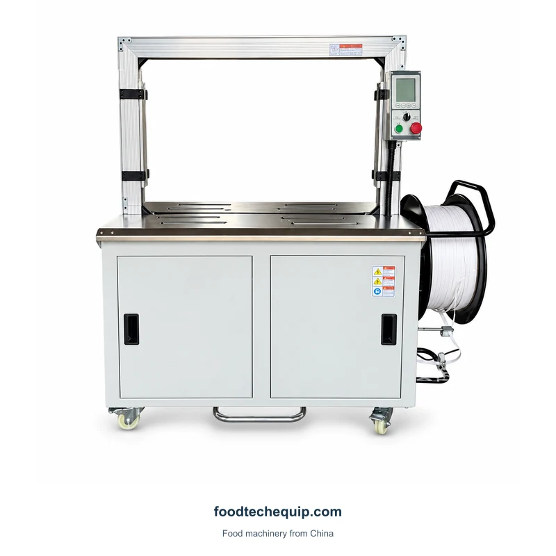
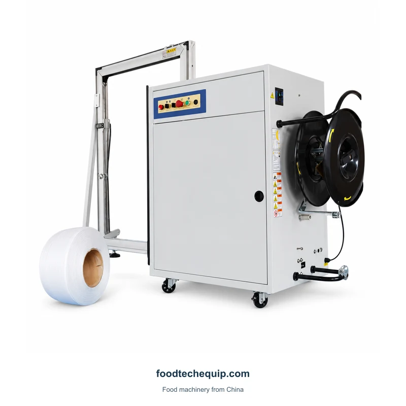

Strapping
Arch Strapping Machine
An arch strapping machine with a PP strap reel and integrated controls.
View equipmentStrapping reinforces cartons or bundles using a compatible strap and application arrangement. Specify the strap, load and placement to compare machine configurations.

An arch strapping machine with a PP strap reel and integrated controls.
View equipment
A side-seal strapping machine with an arch frame and strap reel.
View equipmentTry a different keyword or clear your filters.
Specify the strap material, width and thickness for the package and load. PP and PET requirements should be identified separately when discussing the machine configuration.
Provide filled package dimensions, load characteristics and strap positions. Include support and transfer through the arch in the enquiry.
| Selection area | What to compare | What to provide |
|---|---|---|
| Consumable | Material, width and thickness | Actual strap specification |
| Package | Load shape and support | Filled carton or bundle dimensions |
| Placement | Strap positions and transfer | Sketch showing each required strap |
Describe the package before the strap is applied, including its closure and support. Tape sealing and strapping should have separate coverage and placement requirements in the enquiry.